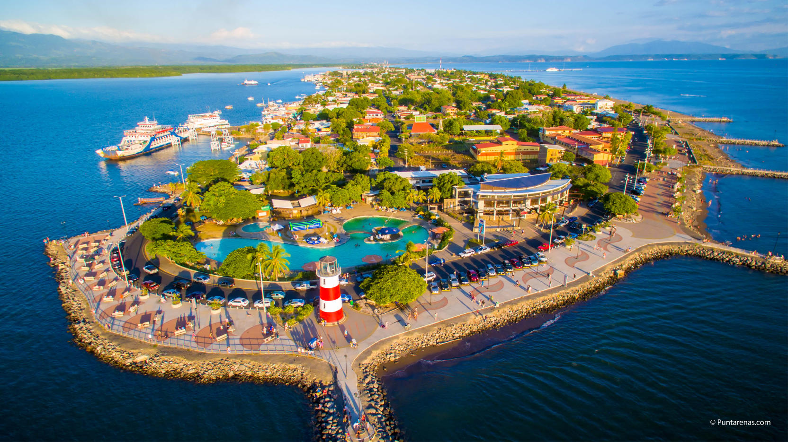

Puntarenas
Puntarenas es provincia número 6 de Costa Rica, ubicada en su zona occidental y abarcando la mayor parte de la costa Pacífica del país. Limita con las provincias de Guanacaste, Alajuela, San José, Limón y con Panamá. Posee una superficie de 11.266 km², lo que la convierte en la provincia más extensa de Costa Rica, con una población de 410.929 habitantes.
 Volver